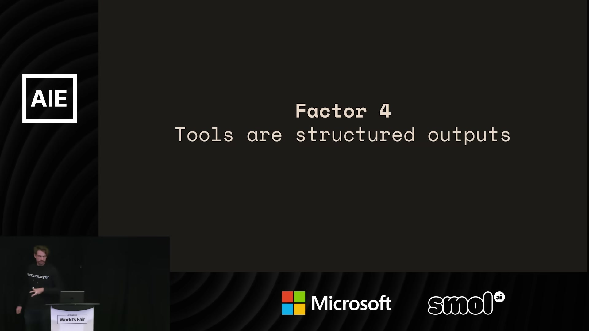
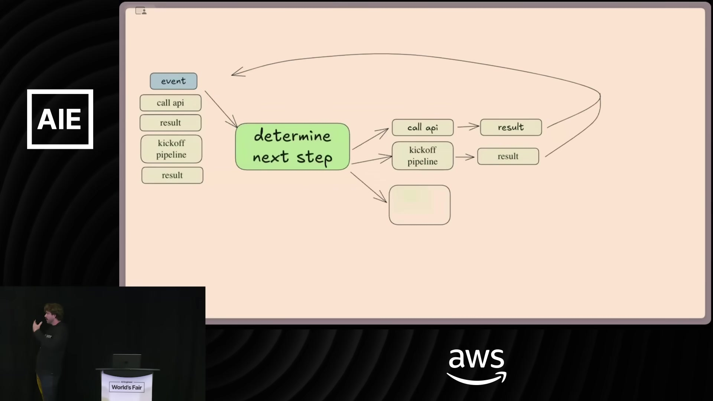
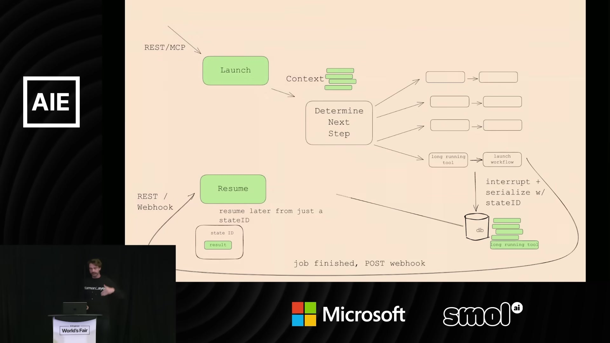
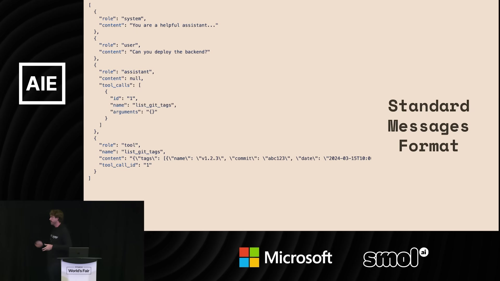
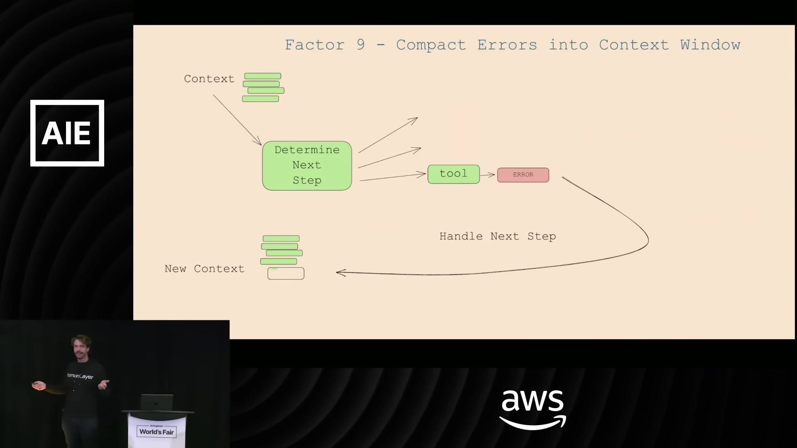
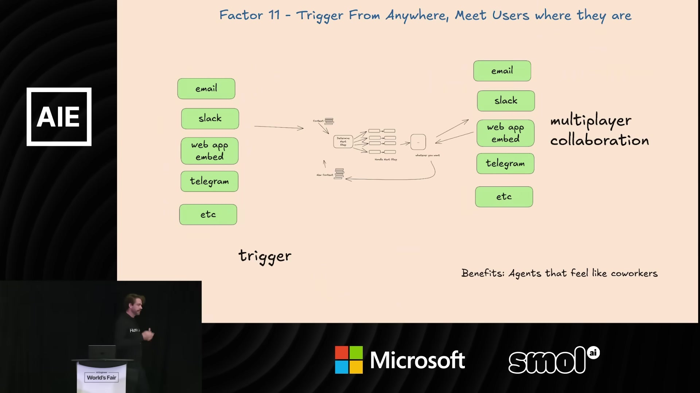

1. 开场：生产可靠性的门槛
00:00:00现场与片尾〔片头音乐〕
00:00:14Dex Horthy · 主讲在座有谁在构建 Agent？做过十个以上 Agent 的请举手。有人做过一百个吗？好，确实有几位。太棒了，我很喜欢。
00:00:26Dex Horthy · 主讲我想，我们很多人都经历过构建 Agent 的这段旅程。对我来说，事情是这样开始的：我决定做一个 Agent，想清楚希望它完成什么。我们想快速推进；我们是开发者，所以会用库，不会什么都从头写。
00:00:39Dex Horthy · 主讲然后，你能把它做到大约 70% 或 80% 的水平，足以让 CEO 很兴奋，再给你的团队增加六个人。但接下来你会发现，70% 或 80% 还不够好。要突破这道质量门槛，你可能得深入七层调用栈，反向研究这个提示词究竟怎样构建、这些工具怎样传进去，它们到底来自哪里。
00:00:59Dex Horthy · 主讲如果你和我一样，最后可能会把它们全扔掉，从头再来。或者，你甚至会发现，这个问题本来就不适合用 Agent 解决。
00:01:07Dex Horthy · 主讲我记得自己最早尝试构建的 Agent 之一，是一个 DevOps Agent。我告诉它：“这是我的 Makefile，你可以运行 Make 命令，去把项目构建出来。”结果它搞不明白，所有操作的顺序都错了。我想，好吧，那就改提示词。
00:01:19Dex Horthy · 主讲接下来的两个小时，我不断补充细节：每样东西是什么，每一步是什么，确切应该怎样执行。最后，我已经把构建步骤的精确顺序全写出来了。这是一次很有意思的练习，但结束时我想，同样的事，我大概九十秒就能写出一个 Bash 脚本。不是每个问题都需要 Agent。
00:01:37Dex Horthy · 主讲我一直在经历这个过程，我想你们很多人也有类似经历。为了帮助大家构建更好、更可靠的 Agent，我和一百多位创始人、开发者、工程师交流，开始发现一些共同模式。
00:01:51Dex Horthy · 主讲其中一个发现是，多数生产环境中的 Agent，其实并没有那么“自主”。它们主要还是软件，只是很多人都在做一些核心的事情。这些模式，让他们基于 LLM 的应用变得非常出色。
00:02:05Dex Horthy · 主讲他们也没有从零开始重写整个系统，而是在既有代码中运用一些小而模块化的概念。这些概念当时没有名字，也没有定义。很棒的一点是，我认为你不需要 AI 背景也能做到。这就是软件工程入门——好吧，也许不完全是入门级。
00:02:22Dex Horthy · 主讲就像 Heroku 当年需要定义怎样构建能在云端运行的应用一样，那时我们甚至还不叫它们“云原生”。那是十年前在云上构建应用的方式。于是，我根据自己在实际领域里看到的情况，整理了我认为 AI Agent 应该具备的十二个要素。
00:02:39Dex Horthy · 主讲我们把它放到了 GitHub 仓库，你们可以去读。结果发现，很多人也赞同，有相同的感受。项目在 Hacker News 首页待了一整天，在社交媒体上获得了二十万次曝光。这一张我就放在这里，不作评论。再给大家一点背景：大约一两个月，我们拿到了四千颗星，目前有十四位活跃贡献者。
00:03:02Dex Horthy · 主讲读完这些内容、听完这个演讲，很容易就会说：“哦，原来这是来反对框架的。”我不是来抨击框架的。与其这样理解，不如把它看成一份愿望清单、一组功能请求：怎样让框架服务那些非常优秀的开发者，让他们既能追求高可靠性，又能快速推进。
00:03:24Dex Horthy · 主讲那么，我今天想做什么？我希望大家先忘掉自己对 Agent 的既有认识，从第一性原理重新思考：怎样把软件工程中学到的一切，运用到真正可靠的 Agent 上。
00:03:38Dex Horthy · 主讲我们会稍微打乱顺序。如果按顺序讲完全部十二条，那需要三十分钟，所以有些内容会合并着讲。最后会有二维码，大家可以慢慢深入了解。
2. 结构化输出、工具与控制流
00:03:46Dex Horthy · 主讲第一条：LLM 能做的最神奇的事情，和循环、switch 语句、代码、工具这些东西都没有关系。它就是把像这样的一个句子，变成像这样的 JSON。你拿这个 JSON 做什么，甚至还不重要，那是其他要素负责的事情。但只要能做这一步，你今天就可以把这种能力带进自己的应用。

00:04:07Dex Horthy · 主讲第四条。这让我直接想到一篇文章：《GOTO 语句有害论》。有人读过吗，或者至少听说过？我其实也没有读过。它讨论的是，当时 C 语言和其他很多编程语言中都有一种叫 goto 的抽象；这种东西会让代码变得糟糕，是错误的抽象，谁都不应该用。
00:04:27Dex Horthy · 主讲我在这里大胆一点，说：“工具使用是有害的。”我给它加了引号，因为我不是反对让 Agent 访问外部世界，那当然很酷。我认为造成困难的是这种想法：工具使用是一件神秘的事情，仿佛某个飘忽的外星实体正在和自己的环境交互。
00:04:41Dex Horthy · 主讲实际上发生的事情是：LLM 输出 JSON，我们把它交给某段确定性代码，代码执行某种操作，然后也许再把结果反馈回去。不过，后面这些又属于其他要素。如果你有这样的数据结构，并能让 LLM 生成它，就可以把它交给这样的循环，或者这样的 switch 语句。工具没有什么特别，它只是 JSON 和代码。这就是第四条。
00:05:05Dex Horthy · 主讲第八条：掌握自己的控制流。接下来这几条我们会合并着讲。我想先退一步，看看我们是怎样走到这里的。我们在软件里写 DAG，也就是有向无环图，已经很久了。如果你写过 if 语句，你就写过一个有向图。代码就是图。
00:05:21Dex Horthy · 主讲你可能还接触过 DAG 编排器。有人用过 Airflow、Prefect 或类似的东西吗？把事情拆成节点，可以给你某些可靠性保证。
00:05:32Dex Horthy · 主讲Agent 原本承诺的事情，也是很多人在讨论的事情——我认为有些场景确实实现了——是你不必自己写出这个 DAG，只要告诉 LLM 目标，它就会自己找到实现目标的路径。我们把它表示为一个很简单的循环：LLM 决定下一步，不断积累上下文，直到它说：“已经完成。”
00:05:53Dex Horthy · 主讲实际看起来就是这样：有一个事件进来，把它传给提示词；模型说要调用一个 API，你取得结果，把结果加入上下文，再把全部内容传回提示词。这就是构建 Agent 最朴素、最简单的方式。

00:06:10Dex Horthy · 主讲LLM 调用几个步骤，最终会说：“很好，初始事件要求的所有任务都完成了。”那个初始事件可能是用户消息，要求它做点什么，也可能是一次故障。于是，我们得到最终答案。实际形成的 DAG，就是这三个按顺序执行的步骤。
00:06:25Dex Horthy · 主讲结果发现，这种方式并不太行，尤其是流程越来越长的时候。主要原因是上下文窗口不断变长，当然，你也可以从其他方面找原因。
00:06:34Dex Horthy · 主讲有人会说：“有人试过把两百万 token 塞进 Gemini，看看会怎样吗？”你当然可以这样做，会得到一个答案，API 会返回某些东西。但我想没人会反对：通过控制、限制放进上下文窗口的 token 数量，你总能得到更紧凑、更好、更可靠的结果。
00:06:53Dex Horthy · 主讲虽然它不完全行得通，我们还是先用这个抽象继续构建。Agent 究竟是什么？你有提示词，指导它如何选择下一步；有 switch 语句，接收模型输出的 JSON，并据此执行某种操作；有构造上下文窗口的方式；还有一个循环，决定何时、何地、以什么方式、为什么退出。
3. 状态、提示词与上下文
00:07:10Dex Horthy · 主讲如果掌握自己的控制流，你就可以做很多有意思的事情：中断、切换、摘要、使用 LLM 作为裁判，等等。这又直接连接到，我们怎样管理 Agent 的执行状态和业务状态。
00:07:23Dex Horthy · 主讲很多工具会提供当前步骤、下一步、重试次数等信息，这些 DAG 编排器都有类似概念。但你还有业务状态：已经发生了哪些消息，正在向用户展示什么数据，有哪些事情在等待批准。
00:07:40Dex Horthy · 主讲我们希望像使用标准 API 一样，启动、暂停、恢复这些流程。这些都只是软件。所以，你可以把 Agent 放在 REST API 或 MCP 服务后面，再这样管理循环：普通请求进来，把对应上下文加载给 LLM，并允许 Agent 调用一个长时间运行的工具。
00:08:00Dex Horthy · 主讲这时，我们可以中断工作流，直接把上下文窗口序列化到数据库中，因为上下文窗口由我们掌握，后面会再讲。外部工作流启动之后，最终会带着状态 ID 和结果回调。我们用这个 ID 从数据库中加载状态，把结果追加进去，再传回 LLM。

00:08:17Dex Horthy · 主讲Agent 甚至不知道背后发生过这些事情。Agent 就是软件，所以我们就来构建软件。要做出真正优秀的 Agent，需要很大的灵活性。你确实需要掌握那个内层循环，理解所有部分怎样配合。这就是统一状态，以及暂停和恢复。
00:08:36Dex Horthy · 主讲第二条：掌握自己的提示词。我想很多人最早就会发现这一点。有些抽象很不错，如果你不想花大量时间手写提示词，可以输入一些东西，得到一组很好的基础内容和很出色的提示词，可能好到你得去上三个月提示词课程，才能自己写出来。但最后，如果要跨过某个质量门槛，你还是会亲手编写每一个 token。
00:09:01Dex Horthy · 主讲因为 LLM 是纯函数，决定 Agent 可靠性的，是你能得到多好的输出 token；除了重新训练模型之类的方式，决定输出 token 的，就是你对输入 token 有多仔细。
00:09:16Dex Horthy · 主讲我不知道什么方式最好，也不知道你想怎样构建提示词。但我知道，你能尝试的事情越多、能测试的调节项越多、能评估的方案越多，就越有可能找到真正出色的结果。
00:09:29Dex Horthy · 主讲除了掌握提示词，你还需要掌握上下文窗口的构造方式。可以使用标准的 OpenAI messages 格式；也可以在让 LLM 选择下一步时，记住你唯一的任务，就是告诉它到目前为止发生了什么。

00:09:42Dex Horthy · 主讲这些信息可以按你希望的任何方式放进一条用户消息，问它：“下一步是什么？”也可以放进系统消息。事件状态、线程模型，都可以由你自己建模，再按你希望的方式序列化。我们内部一些 Agent 的执行轨迹，可能就像屏幕上这样，稍后我会再讲。
00:09:59Dex Horthy · 主讲如果你没有查看每一个 token，没有优化向 LLM 传递信息时的密度与清晰度，就可能错过提升质量的机会。LLM 是纯函数，输入 token，输出 token。让 Agent 变好的所有事情，都是上下文工程。
00:10:15Dex Horthy · 主讲你有提示词，有记忆，有 RAG，有历史记录。它们都在回答同一个问题：怎样把正确的 token 放进模型，让它给出很好的回答，解决用户的问题——主要是解决我自己的问题。我不知道什么最好，但我知道，你会希望把各种方式都试一遍。所以，掌握你自己的上下文构造。
00:10:37Dex Horthy · 主讲下面这一条有点争议，所以我把它单独列为一个要素。要让它真正有效，需要与其他要素结合。当模型犯错，调用 API 的方式不对，或者它调用的 API 正好宕机时，你可以拿到那次工具调用及对应的错误，放进上下文，让模型再试一次。
00:10:55Dex Horthy · 主讲有人在这方面吃过苦头吗？见过模型越转越乱，失去上下文，然后彻底卡住吗？这就是为什么你需要掌握上下文窗口。不要盲目往里追加内容。如果前面有错误，后来出现了一次有效工具调用，就清理所有待处理的错误，或者把它们总结一下。

00:11:09Dex Horthy · 主讲不要把完整堆栈追踪都放进上下文。想清楚到底要告诉模型什么，才能取得更好的结果。
4. 人与小型 Agent 的协作
00:11:17Dex Horthy · 主讲通过工具联系用户。这一点有些微妙，不过这是我在实际中观察到的：几乎所有人都在回避输出开始时那个很重要的选择——到底是调用工具，还是给人发送消息。
00:11:32Dex Horthy · 主讲如果把这个选择放到一个自然语言 token 上，一方面，你可以给模型多种表达方式：“我完成了”“我需要澄清”“我需要找一位负责人”，等等；另一方面，你把意图放到了最初 token 的生成和采样中，用的是模型能够理解的自然语言。
00:11:49Dex Horthy · 主讲如果把人的输入接进来，你的执行轨迹可能就像这样。这也让你能够构建外层自主循环的 Agent〔此处术语听辨存疑〕。今天不展开讲，网站上有对应文章的链接，我写过不少相关内容。我不知道哪种最好，但你大概应该都试一试。这就是通过工具联系用户。
00:12:09Dex Horthy · 主讲它与“从任何地方触发、到用户所在的地方与他们交互”紧密相关。人们不希望为不同的 ChatGPT 式 Agent 开七个标签页。让他们通过邮件与你构建的 Agent 交流，通过 Slack、Discord、SMS，或者其他方式交流。我们看到这样的方式正在很多地方兴起。

00:12:27Dex Horthy · 主讲你还应该构建小而专注的 Agent。刚才我们谈了那个结构，以及它为什么不太行。那么，什么有效？实际做得很好的是微型 Agent：整体仍然是一个主要由确定性代码组成的 DAG，里面有一些很小的 Agent 循环，大约三到十步。
00:12:42Dex Horthy · 主讲我们在 HumanLayer 就这么做。有个机器人管理我们的部署，大部分部署流水线仍然是确定性的 CI/CD 代码。但当 GitHub PR 已经合并、开发环境测试通过后，我们就把它交给模型，说：“把它部署上去。”模型说：“好，我要部署前端。”然后，可以把这个动作交给人来看。
00:13:00Dex Horthy · 主讲人会说：“不对，先部署后端。”这就是把自然语言转成 JSON，它成为我们工作流的下一步。后端部署被提出、被批准，再实际执行；接着，Agent 知道自己还得回头部署前端。
00:13:15Dex Horthy · 主讲当所有工作都成功完成后，我们直接回到确定性代码，针对生产环境运行端到端测试。如果失败，就交给一个小型回滚 Agent，它内部的结构也很相似。我不深入展开了，屏幕上就是它在我们 Slack 频道中的运行情况。
00:13:28Dex Horthy · 主讲对，一百个工具，二十个步骤，也很轻松。上下文可管理，职责清楚。
00:13:35Dex Horthy · 主讲很多人会问：“如果 LLM 持续变聪明呢？如果我放进去两百万 token，它也能完成呢？”我认为我们确实会看到这样的演进：一开始，大部分是确定性工作流，逐渐在代码、后端和业务逻辑中加入 LLM。随着时间推移，LLM 能完成越来越大、越来越复杂的任务，直到整个 API 端点或整条流水线都由一个 Agent 运行。这很好。
00:14:01Dex Horthy · 主讲但你仍然需要知道，怎样通过工程手段让这些东西取得最佳质量。这里是 NotebookLM 团队一位成员的看法，我认为他说得很好：找到一个刚好处于模型可靠能力边界的问题，也就是模型还不能每次都做对的问题。
00:14:15Dex Horthy · 主讲如果你能通过系统设计，把可靠性做进去，让它仍然能够稳定完成这个任务，你就创造出了神奇的东西，而且会比其他人正在做的东西更好。这就是小而专注的 Agent。
5. 抽象、工程原则与结语
00:14:28Dex Horthy · 主讲这里还有一个关于无状态 reducer 的梗。有人在社交媒体上告诉我，因为它包含多个步骤，所以它其实不是 reducer，而是 transducer。但核心意思是，Agent 应该是无状态的。状态应该由你来掌握，按你希望的方式管理。
00:14:42Dex Horthy · 主讲我们都还在寻找合适的抽象。我在文章里链接了几篇博客，讨论框架与库；还有一篇很早的 RubyConf 演讲〔会议名听辨存疑〕，讨论我们究竟愿意保留重复代码，还是希望尽早找出抽象。
00:14:53Dex Horthy · 主讲如果你想构建一个十二要素 Agent，我们正在做一个叫 create 12-factor agent 的东西。因为我相信，Agent 所需要的不是 Bootstrap。你不需要把一个内部组件再包上一层；你需要的更像 shadcn：先把脚手架生成出来，然后由我拥有它、拥有代码，这样我完全可以接受。
00:15:11Dex Horthy · 主讲总结一下，Agent 是软件，大家都会构建软件。有人写过 switch 语句吗？while 循环呢？好，所以我们能做这些事情。LLM 是无状态函数，这意味着只要确保把正确的信息放进上下文，你就能获得最好的结果。
00:15:26Dex Horthy · 主讲掌握你的状态和控制流，亲自做、亲自理解，因为这样才能获得灵活性。然后，去寻找能力的最前沿。通过精心组织给模型的输入，以及控制怎样使用它的输出，找到比其他人做得更好的办法。
00:15:39Dex Horthy · 主讲我的观点是，有人参与时，Agent 会更好。寻找让 Agent 与人协作的方法。构建 Agent 确实有一些困难的事情，但至少目前，你大概仍然应该去做，而且其中大部分都应该自己面对。
00:15:53Dex Horthy · 主讲我认为很多框架试图拿走 AI 问题中困难的部分，好让你直接接入、开始使用。但我认为应该反过来：工具应该拿走其他困难的部分，让我们能够把全部时间放在真正困难的 AI 部分——把提示词、流程和输入 token 做对。
00:16:11Dex Horthy · 主讲我之所以来这里，是因为我确实经营着一家小公司。我们的创业团队想帮助大家处理这些事情，很多工作都是公开、开源完成的。我认为这很重要，需要大家一起推进。
00:16:24Dex Horthy · 主讲还有一些事情虽然难，却没有那么重要，也没有那么有趣。这就是我们在 HumanLayer 想解决的部分。我们也在研究一个叫 A2H 的协议，希望围绕 Agent 怎样联系用户，形成更统一的方式。有兴趣的话，可以来找我聊。
00:16:40Dex Horthy · 主讲但最主要的原因，是我喜欢自动化。我为个人事务、找公寓，以及 HumanLayer 内部各种业务，构建了很多很多 Agent。谢谢大家观看，我们去构建点东西吧。待会儿走廊见，如果你想聊 Agent、构建、控制流或者相关问题，我很愿意交流。这就是 12-Factor Agents。
00:16:58现场与片尾〔现场掌声〕